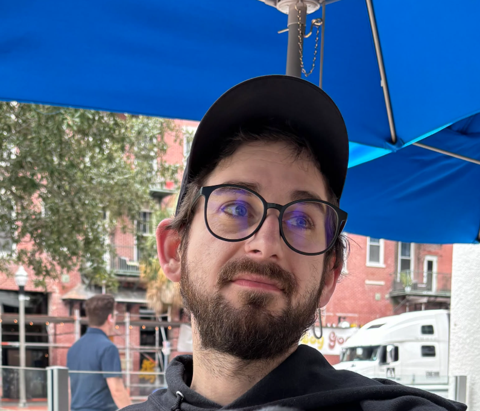
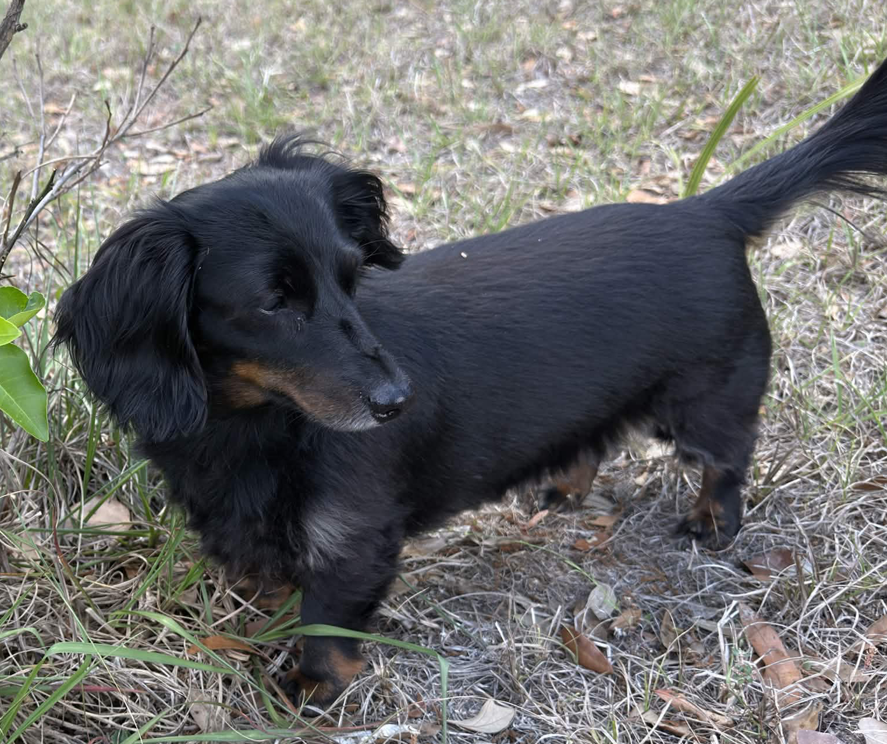

Jacob's Portfolio
About Me!

I started getting into technology in high school when I built my first gaming PC in 2008. Since then, I've spent years building, upgrading, and troubleshooting computers for myself, friends, and family. The more I learned, the more I realized I enjoy tinkering with technology and figuring out how things work—or why they stopped working. That curiosity is what drives me toward full-stack development. This journey hasn't always been easy. Dealing with ADHD and imposter syndrome has stopped me more than once. But as I'm writing this at 35 years old, something feels different. The self-doubt that used to hold me back isn't nearly as loud as it once was, and I'm finally taking the steps to pursue a career in technology. I'm building this website to document my progress as I learn full-stack development through Scrimba. My goal is to share what I learn, showcase my projects, and create a portfolio that reflects my growth as a developer.
Hobbies!
I have quite a few hobbies that I like to do when I am or am not at my pc.
-
Play video games!
I have been a gamer for a long time and don't see myself stopping anytime soon. Right now I am playing a game called Star Citizen and I am a part of an ORG.
-
Photography
I started doing photography in high school as well and I took a long break but I am trying to get back into it!
-
Movies and Anime.
Like most people I like to watch movies, I really like documentaries, true crime and movies set in space! When it comes to anime, I'll watch just about anything.
-
Play with my dogs.
This is my most favorite things to do!
Meet My Dogs!
